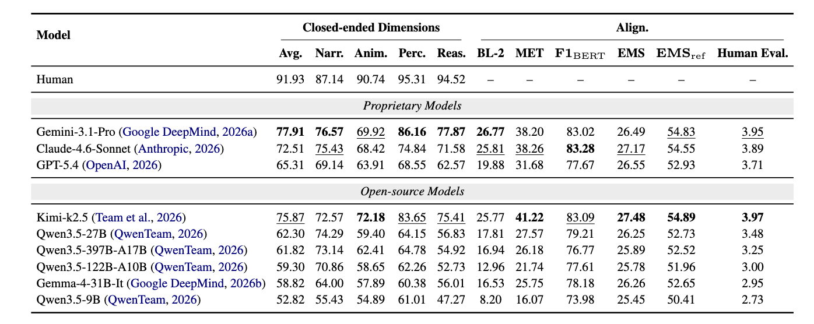

Narrative
High-level storytelling logic, topic, intent, and communicative stance.
Findings of EMNLP 2026
Benchmarking MLLMs for Understanding Dynamic Charts and Narratives in Data Videos
1Fudan University · 2The Hong Kong University of Science and Technology (Guangzhou)
*Equal contribution †Corresponding author
While MLLMs have made significant strides in chart comprehension and video understanding, current evaluations largely isolate these capabilities, leaving a critical gap in understanding temporally evolving structured visual information. We introduce DVBench, a benchmark for evaluating MLLMs on data videos—a storytelling medium that integrates dynamic charts with structured narratives. DVBench contains 300 real-world data videos and 1,000 human-verified QA pairs curated through a rigorous semi-automated pipeline. Evaluations of nine MLLMs show that Gemini 3.1 Pro achieves the best overall performance, while Kimi K2.5 is the strongest model in the paper's open-source grouping.

High-level storytelling logic, topic, intent, and communicative stance.
Dynamic transitions across visual elements, annotations, camera, and pacing.
Direct reading of titles, axes, legends, ticks, labels, and values.
Higher-level insights inferred across visual elements and video frames.
Reconstruction of masked narration from visual evidence and subtitle context.

The benchmark is constructed in three stages: video collection, dimension-specific QA candidate generation, and expert curation. Narrative candidates are generated and filtered with MLLMs; Animation and Chart Perception questions target transitions and explicit graphical elements; Chart Reasoning combines visual and subtitle-derived facts; and Alignment is formulated as a subtitle-cloze task.

The 1,000 questions span five dimensions, diverse chart types, video lengths from under 30 seconds to about 37 minutes, and ten real-world topic groups. Chart Reasoning is the largest dimension, reflecting the cross-frame reasoning demands of data videos.

The Timeline layer is particularly challenging, with nearly all models below 37.50% accuracy. Current MLLMs struggle to perceive how animation pace changes over time, including acceleration and deceleration.
Aggregation is among the hardest reasoning categories. Several open-source models achieve only around 40% accuracy when counting condition-matching elements across dynamic charts and multiple frames.
Proprietary models and Kimi K2.5 generally ground Data Insight better than Data Context, while other open-source models drop more sharply on Data Insight. The gap is driven mainly by visual-text grounding errors rather than phrasing differences.
Leading proprietary models and Kimi K2.5 remain stable beyond six minutes, whereas weaker models decline almost linearly. Narrative understanding stays comparatively stable, but fine-grained visual tasks often fall below 50%.
Performance does not improve monotonically with denser sampling. Across all tested Qwen3.5 models, 2 fps underperforms 0.5 and 1 fps, showing that additional frames do not necessarily provide more useful evidence.
Subtitles improve every model on average, with gains concentrated in Narrative and Chart Reasoning. For Qwen3.5 and Gemma, Chart Reasoning improves by 7.92–11.47 points, while visual-perception gains are smaller and less consistent.
If you find DVBench useful for your research, please cite our work.
@inproceedings{wang2026dvbench,
title={DVBench: Benchmarking MLLMs for Understanding Dynamic Charts and Narratives in Data Videos},
author={Wang, Bomiao and Shao, Zekai and Lan, Jiexiang and Fu, Xiaoliang and Zeng, Xingchen and Chen, Siming},
booktitle={Findings of the Association for Computational Linguistics: EMNLP 2026},
year={2026}
}